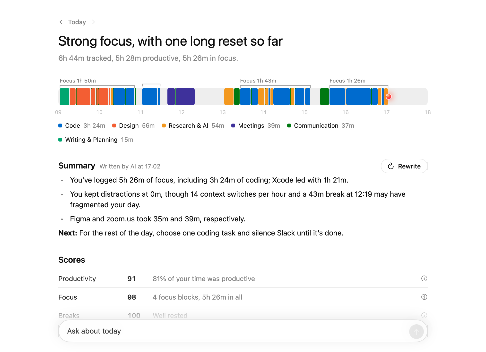

Tracks your time automatically. Ribbon records every app and website you use, and for how long. You don't have to start or stop anything.
Ribbon tracks the apps and websites you use, shows how you spent your day, and blocks distractions while you work.
Requires macOS 14 or later. Works on Apple silicon and Intel Macs.

Tracks your time automatically. Ribbon records every app and website you use, and for how long. You don't have to start or stop anything.
Sorts your time into categories. AI puts each app and website into a category, like Code or Meetings. You can add your own categories too.
Blocks distractions while you focus. Start a focus session and choose the apps and websites you need. Ribbon blocks the rest until it ends.
Answers questions about your time. Ask things like “How long was I on YouTube this week?” and Ribbon tells you.
Ribbon saves your activity on your Mac. There's no account to create. To use the AI features, add your OpenAI API key in Settings. Ribbon then sends app and website names to OpenAI, and screenshots during focus sessions.